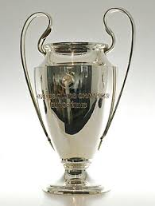

Manchester United Football Club is one of the most successful and iconic English teams in the history of the UEFA Champions League. The club has won the prestigious trophy three times (1968, 1999, 2008) and is renowned for a history of dramatic comebacks, legendary players, and unforgettable nights at Old Trafford.
Under the management of Sir Matt Busby, a decade after the Munich Air Disaster, United became the first English club to win the European Cup. On a emotional night at Wembley Stadium, they defeated S.L. Benfica 4-1 after extra time, with a iconic performance from Sir Bobby Charlton, who scored twice.
The 1998-99 season under Sir Alex Ferguson is etched in football folklore. After winning the Premier League and FA Cup, United faced Bayern Munich in the Champions League final at the Camp Nou. Trailing 1-0 as the match entered stoppage time, substitute Teddy Sheringham equalized in the 91st minute. Almost immediately, another substitute, Ole Gunnar Solskjær, scored a dramatic winner in the 93rd minute to complete an unprecedented treble for an English club. This remains one of the greatest comebacks in sporting history.
Led by the brilliance of Cristiano Ronaldo, United reached the final against Chelsea in Moscow. After a 1-1 draw, the match went to a penalty shootout. Captain John Terry slipped and missed a penalty that would have won it for Chelsea, and United's goalkeeper Edwin van der Sar made the decisive save from Nicolas Anelka to secure United's third European crown.
Key Champions League Statistics for Manchester United
While the post-Ferguson era has seen periods of transition, the club's history and stature ensure the Champions League anthem at Old Trafford remains a powerful occasion. The club continues to target a return to the latter stages of the competition, driven by the expectations set by past heroes like George Best, Eric Cantona, Paul Scholes, and David Beckham.
Manchester United's identity is inseparable from the European Cup. Their story is one of resilience, tragedy, ultimate triumph, and a never-say-die attitude that has defined some of the competition's most iconic moments.